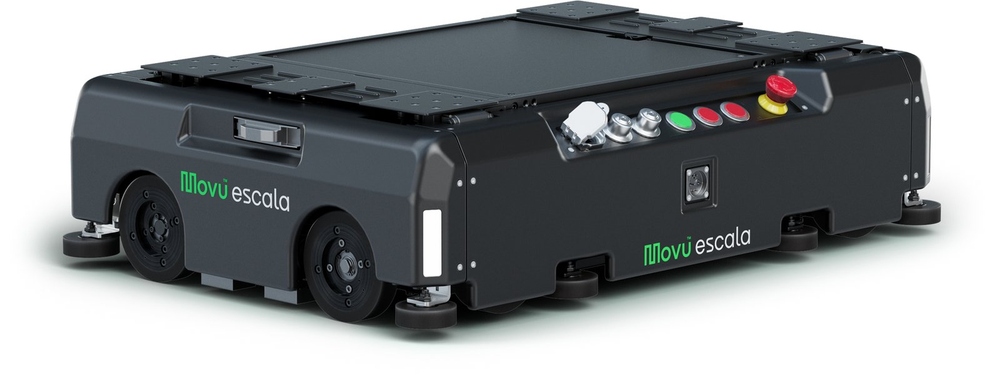
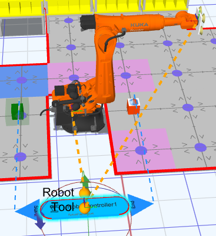

Movu NV
3D simulations of AGV fleets around the Eligo robotic picking arm to optimize picks per hour and throughput.
Overview
From February 2024 to July 2025, I was a Warehouse Robotics Intern at Movu NV in Lokeren, Belgium. I created 3D simulations of AGV (automated guided vehicle) fleets moving through a conveyor system around the Eligo robotic picking arm, to optimize picks per hour and throughput.
Movu builds warehouse robotics and automation, including pallet shuttles, autonomous mobile robots, and goods-to-person systems. Eligo is its automated picking robot for sorting warehouse items: a robotic arm picks items from bins that AGVs drive around the arm in a conveyor-like setup.
My role
This was a solo project that I worked on with my manager. I built the simulations in Emulate3D, working in C#, and the team used them to optimize traffic control and estimate throughput and picks per hour. Because the project is under an NDA, I can only describe it at a high level.
What I did
I built custom 3D simulation environments in Emulate3D that model AGV fleets navigating a conveyor system around the Eligo picking arm. The simulation results informed how the conveyors are laid out around the arm.

I also redesigned the AGV traffic control logic in a real-world-calibrated model, raising simulated throughput by 10%. The changes were to how bins flow through the system and how long they wait, both around the arm and before entering the area around it.
Results
- Simulated throughput raised by 10% through redesigned AGV traffic control logic
- Simulation results used to shape the conveyor layout around Eligo
- Simulations used by the team to estimate throughput and picks per hour
What I learned
I learned how to build and use simulations, and how hard it can be to work with industrial software that has quite limited support. I also learned the limitations of simulations: they're a model of the real system, so their results only go as far as their assumptions.